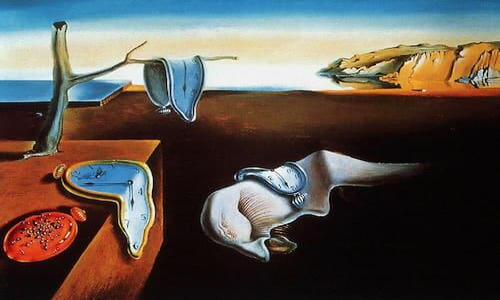
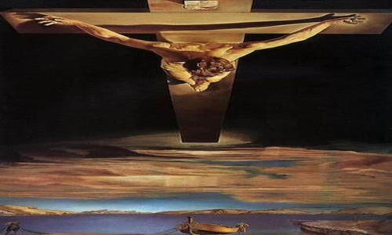
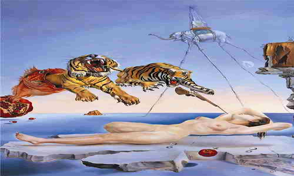
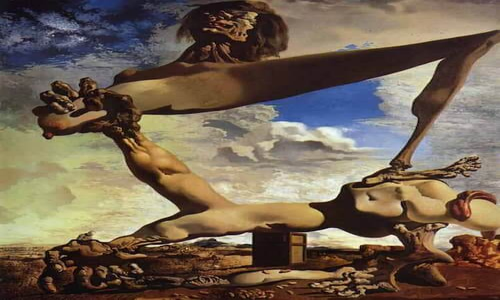
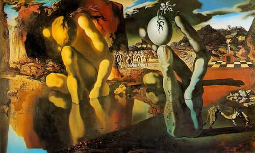
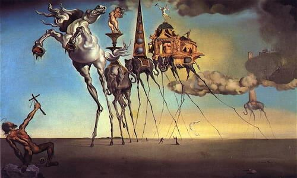
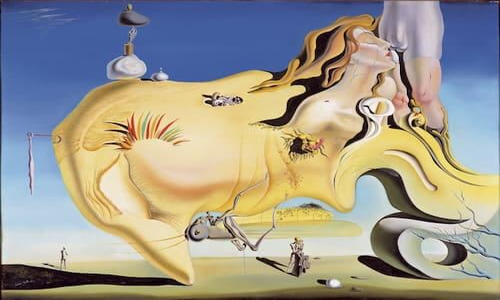
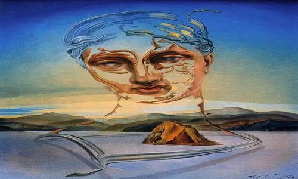
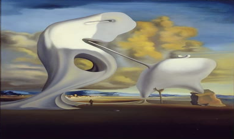
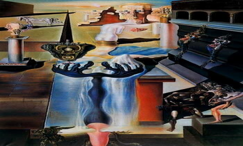

Obras destacadas de Salvador Dalí
La persistencia de la memoria (1931)

Cristo de San Juan de la Cruz (1951)

Sueño causado por el vuelo de una abeja alrededor de una granada un segundo antes de despertar (1944)

Construcción blanda con judías hervidas (1936)

La metamorfosis de Narciso (1937)

La tentación de San Antonio (1946)

El gran masturbador (1929)

El nacimiento de una divinidad (1960)

Ángelus arquitectónico de Millet (1933)

El hombre invisible (1929-1933)
